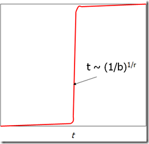

1. 关于距离
两点之间的距离可以用两种方式来衡量，一是几何距离，二是非几何距离。很显然几何距离的定义满足下面的条件：
- $ d(x,y) \geq 0 $
- $ d(x,y) = 0
iffx = y $ - $ d(x,y) = d(y,x) $
- $ d(x,y) \leq d(x,z) + d(z,y) $
几何距离包括各类Norm等等。
非几何距离用的就比较多了：
- Jaccard距离：1减去Jaccad相似度
- 余弦距离：两个向量之间的角度
- 编辑距离（Edit distance）：将一个串变为另一个串需要的插入或删除次数
- 海明距离（Hamming Distance）：Bit向量中不同位置的个数
这里有一个重要的公理：三角形公理（Triangle Inequality），也就是距离的第四个性质。编辑距离 $ d(x,y) = |x| + |y| - 2|LCS(x,y)|$，其中LCS是longest common subsequence，称为最长公共子序列。
2. LSH的核心思想
LSH的一个核心思想就是两个元素哈希值相等的概率等于两个元素之间的相似度。
下面介绍一个重要概念：Hash Family，哈希家族？不管怎么翻译，它指的是能够判断两个元素是否相等的Hash函数集合
$ h(x) = h(y)$
LS Hash Family，局部敏感哈希家族的定义是满足下面两个条件的哈希函数家族：
- 如果$ d(x,y) < d_1$，那么哈希家族$ H $中的哈希函数$ h$满足$ h(x) = h(y)$的概率至少是$ p_1$.
- 如果$ d(x,y) > d_2$，那么哈希家族$ H $中的哈希函数$ h$满足$ h(x) = h(y)$的概率至多是$ p_2$.
通俗来解释，就是如果$ x$和$ y$离得越近，$ Pr[h(p)=h(q)]$就越大。如果$ x$和$ y$离得越远，$ Pr[h(p)=h(q)]$就越小。我们把局部敏感哈希家族记为$ (d_1,d_2,p_1,p_2)$-sensitive。
那什么样的函数满足呢？Jaccard就是。我们令$ S$为一个集合，$ d$是Jaccard距离，有$ Prob[h(x)=h(y)] = 1-d(x,y)$，我们就可以得到一个局部敏感哈希家族：
$ (1/3, 2/3, 2/3, 1/3)$-sensitive
事实上，只要满足$ d_1 < d_2 $, 就可以得到一个局部敏感的哈希家族：
$ (d_1,d_2,(1-d_1),(1-d_2))$-sensitive
$ (d_1,d_2,p_1,p_2)$-sensitive将整个概率空间分成了三部分：
$ \leftarrow p_1$，$ p_1 \rightarrow p_2 $ ，$ \rightarrow p_2$
为了有更好的区分度，我们想让$ p_1 \rightarrow p_2 $的空间尽可能小，让$ d_2-d_1$尽可能大。选择合适的参数，有类似于下面的S曲线：

3. 两种哈希函数操作
定义两种哈希函数的操作：AND和OR。
_AND 操作_
在局部敏感哈希家族$ H$中选出$ r$个哈希哈数，构成哈希家族$ H’$。
对于$ H’$家族中的$ h = [h_1, …, h_r] $，$ h(x) = h(y)$当且仅当对所有的$ i$都满足$ h_i(x)=h_i(y)$。这样得到的$ H’$同样也是一个局部敏感哈希家族。
并且若源哈希家族是$ (d_1,d_2,p_1,p_2)$-sensitive，新哈希家族$ H’$也是$ (d_1,d_2,{p_1}^r,{p_2}^r)$-sensitive的。
.
_OR 操作_
在局部敏感哈希家族$ H$中选出$ b$个哈希哈数，构成哈希家族$ H’$。
对于$ H’$家族中的$ h = [h_1, …, h_b] $，$ h(x) = h(y)$当且仅当存在一个$ i$满足$ h_i(x)=h_i(y)$。这样得到的$ H’$同样也是一个局部敏感哈希家族。
并且若源哈希家族是$ (d_1,d_2,p_1,p_2)$-sensitive，新哈希家族$ H’$也是$ (d_1,d_2,1-(1-p_1)^b,1-(1-p_2)^b)$-sensitive的。
可以看出AND操作是降低了概率，但如果选取一个合适的$ r$，可以使下限概率接近0，而上限概率没有多大影响。类似的，OR操作是增加了概率，但如果选择一个合适的$ b$，可以使上限概率接近1，而下限概率没有多大影响。
我们对AND操作和OR操作做级联：
AND-OR，$ 1-(1-p^r)^b$
OR-AND，$ (1-(1-p)^b)^r$
4. 调参
现在我们选定$ r = b = 4$，那么概率函数可以这么写
| p | 1-(1-p^4)^4 |
|---|---|
| 0.2 | .0064 |
| 0.3 | .0320 |
| 0.4 | .0985 |
| 0.5 | .2275 |
| 0.6 | .4260 |
| 0.7 | .6666 |
| 0.8 | .8785 |
| 0.9 | .9860 |
得到这样的S曲线之后，可以找到一个点t，满足$ 1-(1-t^r)^b = t$。在t点之后，概率快速上升，在t点之前，概率快速下降。根据需要的灵敏度，可以选择合适的上限概率和下限概率来满足应用需求。